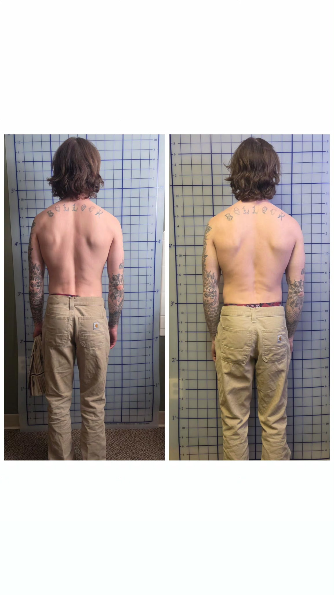
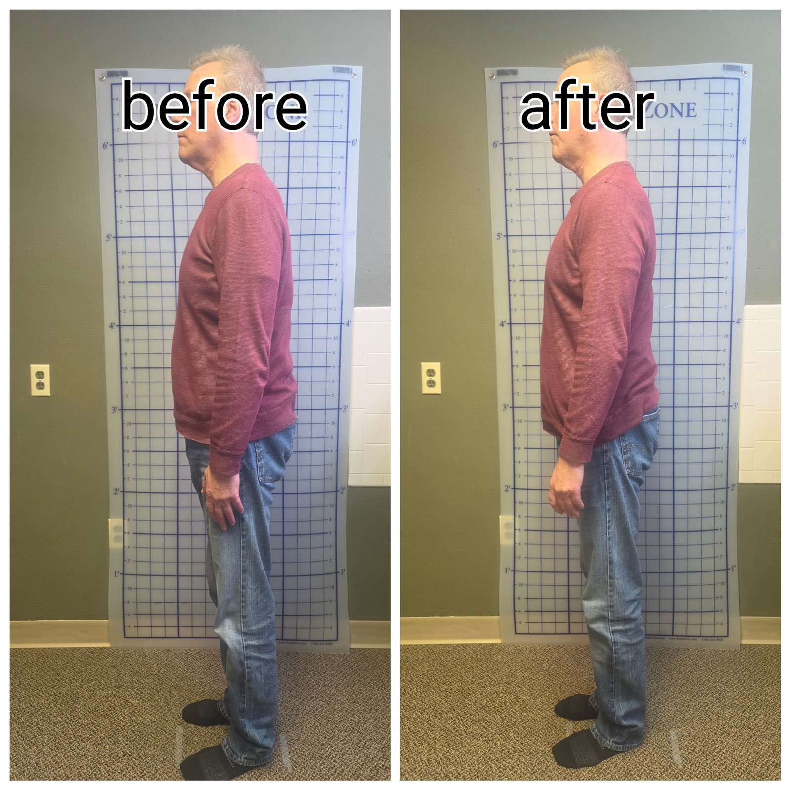
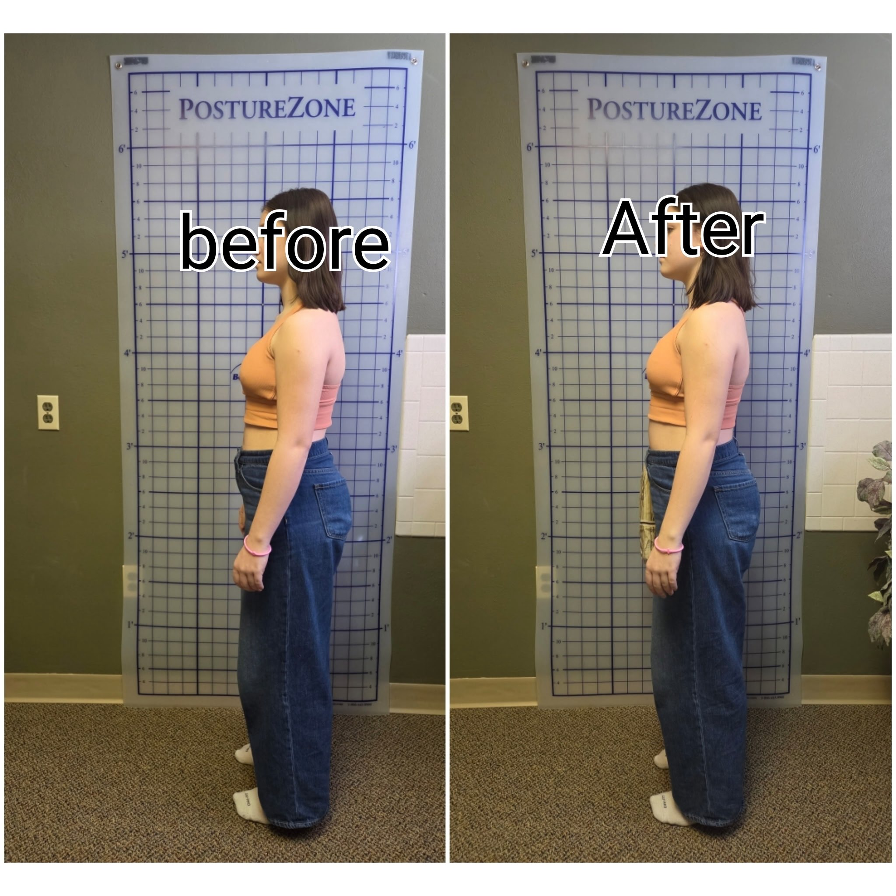

Professional advanced body work using the Jimmy Bluff Technique to restore proper alignment, release chronic tension, and improve your functional movement.
Experience evidence-based structural therapy designed to address pain and dysfunction at their source.
Schedule Your Appointment NowPauline Pearson is a certified advanced body work specialist trained in the Jimmy Bluff Technique, an advanced myofascial method focused on structural alignment and functional restoration. With over 10 years of professional experience, Pauline specializes in addressing chronic pain, postural imbalances, and movement restrictions at their source.
Pauline's evidence-based approach uses targeted tissue work to restore proper alignment, remove adhesions, and enhance your body's natural function. Her commitment to understanding each client's unique structural needs ensures that every session is personalized to achieve meaningful, lasting results.
What is the Jimmy Bluff Technique?
The Jimmy Bluff Technique is an advanced myofascial methodology designed to restore structural alignment and remove tissue restrictions. By addressing the root causes of dysfunction—rather than just symptoms—this method promotes improved posture, reduced pain, enhanced mobility, and better overall function. It's an effective alternative for those seeking to avoid surgery or pharmaceutical interventions.
Specialized myofascial and structural alignment services using the Jimmy Bluff Technique to address your specific needs—whether managing chronic pain, correcting postural imbalances, or improving functional movement.
The core technique designed to restore structural alignment, remove tissue adhesions, and address chronic tension. Ideal for recovering from injury, managing chronic pain, or improving overall function without surgery.
Targeted release of fascial restrictions to improve mobility and reduce pain. Addresses movement restrictions caused by posture, repetitive strain, or injury to restore natural movement patterns.
Specialized work focused on correcting postural imbalances and misalignments. Addresses the root causes of pain and dysfunction by restoring proper body mechanics and alignment.
Evidence-based advanced body work designed to support recovery from injury and surgery. Promotes tissue healing, restores mobility, and prevents re-injury through proper structural restoration.
Pauline's work completely changed how I move and feel. After years of dealing with chronic back pain, the advanced body work and structural alignment work has given me my life back. She's knowledgeable, professional, and genuinely cares about results.
I've been seeing Pauline for myofascial work, and the improvement in my mobility and posture has been remarkable. Her Jimmy Bluff Technique training shows in every session. I recommend her services to everyone dealing with structural issues and pain.
Pauline is an expert at identifying the root cause of dysfunction. Her advanced body work approach is thorough and effective. She takes time to understand your needs and tailors each session accordingly. Highly recommended!
Real transformations from our clients after advanced body work sessions.



Schedule your advanced body work session directly with the booking system.
pauline@massagewithpauline.com
(123) 456-7890
Morton, IL
Available for consultations